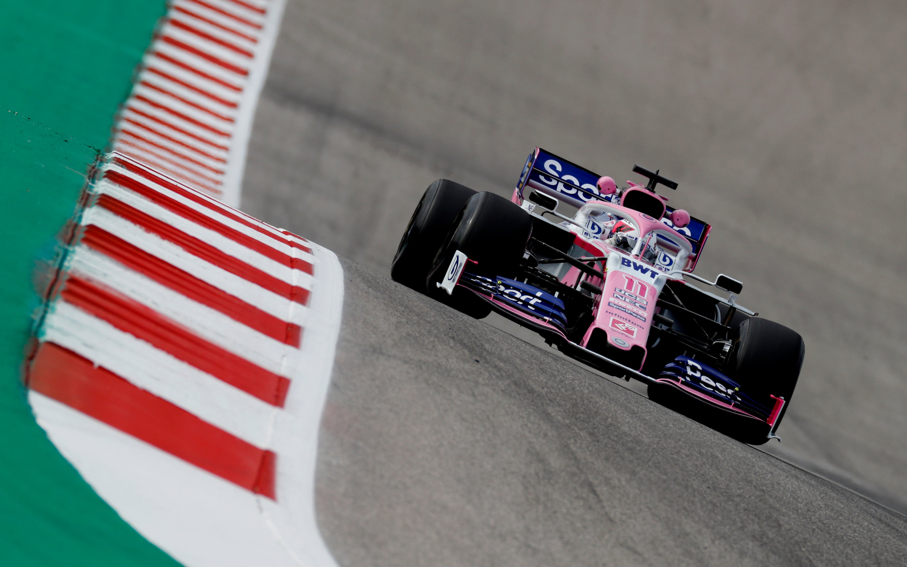

Sergio Pérez Mendoza, detto Checo è nato a Guadalajara il 26 gennaio 1990, è un pilota automobilistico messicano, attivo in Formula 1 con la Red Bull. È il fratello minore del pilota Antonio Pérez, attivo nella NASCAR Mexico Series. Ha fatto il suo debutto in Formula 1 nel 2011 con la Sauber. Nella stagione successiva, raccoglie ottimi risultati (tra i quali, si segnalano tre podi) che gli fanno guadagnare il passaggio alla McLaren nel 2013, in sostituzione del britannico Lewis Hamilton. Tuttavia, dopo una stagione tutt’altro che e ntusiasmante e ricca di risultati (e che, anzi, lo vede spesso in lotta con il compagno di squadra, Jenson Button) con la squadra britannica, viene ingaggiato dalla Force India (successivamente divenuta Racing Point): in queste due scuderie, Perez è complessivamente salito sul podio in sette gare. Nel 2020, inoltre, ha ottenuto la prima vittoria della sua carriera vincendo il Gran Premio del Sakhir, diventando il secondo messicano dopo Pedro Rodríguez de la Vega a vincere un Gran Premio (oltre che il primo in assoluto, nella storia della Formula 1, a vincere un Gran Premio dopo essere stato classificato in ultima posizione alla fine del primo giro).  Il 4 ottobre 2010 la Sauber annunciò l'ingaggio di Pérez per le successive due stagioni di Formula 1, al fianco del giapponese Kamui Kobayashi. Il pilota messicano portò al team svizzero l'appoggio economico della Telmex, che lo aveva sostenuto per gran parte della sua carriera. Pérez fece quindi il suo debutto in Formula 1 nel Gran Premio d'Australia 2011, a Melbourne. Il pilota messicano si mise subito in luce, giungendo settimo al traguardo dopo essere stato l'unico a completare la gara con un solo cambio gomme, ma venne squalificato per un'irregolarità dell'alettone posteriore della sua vettura. Dopo tre gare senza particolari acuti, nel Gran Premio di Spagna Pérez conquistò il nono posto ed i primi punti in carriera. Durante le qualifiche del Gran Premio di Monaco il pilota messicano ebbe un violento incidente all'uscita del tunnel, non disputando la gara per timore di postumi dell'incidente. Al termine delle prove libere del successivo Gran Premio del Canada Pérez accusò malessere, venendo sostituito da de la Rosa per il resto del week-end di gara. Tornato regolarmente in pista nel Gran Premio d'Europa, nel seguente Gran Premio di Gran Bretagna il pilota messicano ottenne il miglior piazzamento stagionale, tagliando il traguardo in settima posizione. Nel resto della stagione Pérez non ottenne risultati di particolare rilievo, giungendo in zona punti in altre tre occasioni e chiudendo al sedicesimo posto nella classifica assoluta, con 14 punti. Il 18 dicembre 2020 viene annunciato il suo ingaggio da parte della Red Bull Racing per la stagione 2021 al posto di Alexander Albon (spostato al ruolo di terzo pilota) al fianco di Max Verstappen. Per il pilota messicano le prime quattro gare con il nuovo team si dimostrano abbastanza difficili, con un quarto posto quale miglior risultato. Si qualifica nono per il Gran Premio di Monaco, ed in gara grazie ad un ottimo passo ed una strategia vincente riesce a risalire fino alla quarta posizione. Grazie al suo risultato e alla vittoria di Verstappen la Red Bull sale al primo posto nella classifica costruttori. Nel Gran Premio d'Azerbaigian parte in sesta posizione ma già dai primi giri riesce a risalire la terza posizione dietro a Lewis Hamilton e Verstappen, supera il britannico con la stategia al pit stop e conquista la vetta quando il suo compagno della Red Bull è costretto al ritiro riuscendo così a conquistare il secondo trionfo in Formula 1. Pérez conquista il suo dodicesimo podio nel Gran Premio di Francia dove arriva terzo superando negli ultimi giri il pilota della Mercedes Valtteri Bottas. Dopo il podio, ottiene altri due piazzamenti a punti in Austria, mentre in Gran Bretagna, dopo un ritiro nella qualifica sprint, conclude la gara in sedicesima posizione conquistando il giro veloce. Nel weekend del Gran Premio del Belgio arriva ufficialità del rinnovo con il team Red Bull per un altro anno. Nel Gran Premio di Turchia Pérez riesce a tornare a podio, arrivando terzo dopo essere partito dalla sesta casella, risultato poi replicato ai successivi Gran Premio degli Stati Uniti e Gran Premio di Città del Messico, diventando il primo messicano nella storia della Formula 1 ad andare a podio nel suo paese. Dopo due quarti posti a San Paolo e Losail, Pérez non ottiene punti nelle ultime due gare, nonostante la sua difesa nei confronti di Lewis Hamilton al Gran Premio di Abu Dhabi sarà un fattore importante per la conquista del titolo da parte del suo compagno di squadra Max Verstappen. Chiude la stagione al quarto posto con 190 punti, suo miglior risultato in Formula 1.